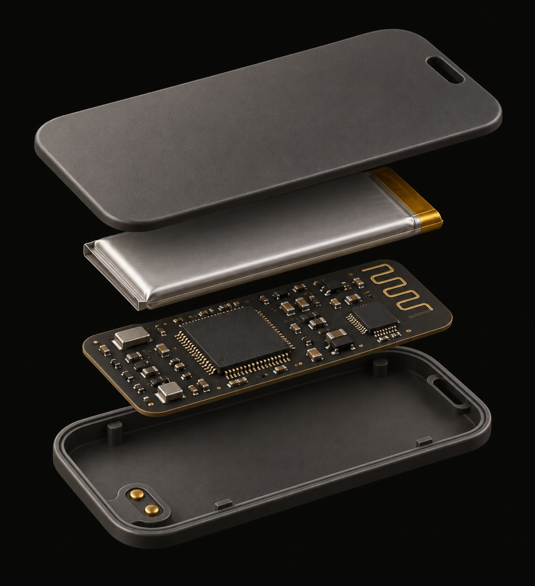
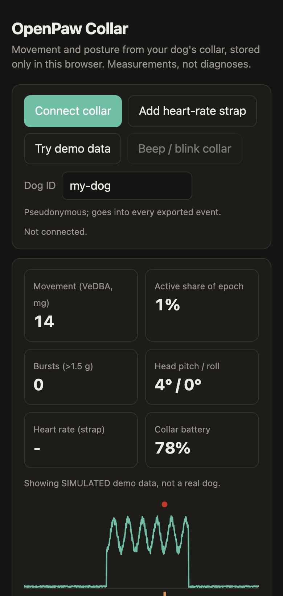

Open-source dog collar Preview edition
Know your
dog’s
baseline.
A $50 collar you build in 15 minutes. Movement, bursts and recovery every 5 seconds. Your data, no subscription.
- GPL-3.0
- No subscription
- Raw data export

IP65 700 mAh nRF52840 accelerometer magnetic chargeBuilt for reactive dogs.
A reaction is a story, not a score: what the baseline looked like, what set it off, how big it got, and how long it took to come back down. OpenPaw records the movement side of that story every 5 seconds, and you add what you saw.
01 · Baseline
Learn what calm looks like for your dog, not an average dog.
02 · Trigger & reaction
Bursts mark lunges and shakes. Tap “trigger seen” in the app to tie them to what happened.
03 · Recovery
Time back to baseline is the number trainers care about, and it’s the one owners can’t eyeball.
Three steps. No soldering.
No toolchain, no app store, no account. If you can drag a file, you can build it.
-
1 Order the parts
About $50
A SenseCAP T1000-E card ($39.90), a collar case and a flat collar. Parts list with links in the guide.
-
2 Drag the firmware
One file, no install
Plug it in, a drive appears, drop openpaw-collar.uf2 on it. Done.
-
3 Open the app
Runs in your browser
Chrome or Edge connects over Bluetooth. On iPhone, use Bluefy. Your data never leaves the device unless you export it.
Have a Claude subscription?
Let Claude walk you through it.
Open the repo in Claude Code and run one command. It picks the kit with you, writes the order list, and checks each step before moving on.
~/openpaw $ claude > /build-collar Which do you want: zero tools (T1000-E card) or cheapest (XIAO board, two solder joints)?
What it measures.
Every 5 seconds the collar turns 250 accelerometer samples into one small, honest record.
VeDBA
412 mg
Movement intensity. A standard measure in animal-tracking research.
Active share
91%
How much of the epoch your dog was moving.
Bursts
1
Sharp events above 1.5 g: lunges, shakes, jumps. Counted once each.
Posture
−12° / 2°
Head pitch and roll: nose down sniffing vs head up scanning.
Add a chest strap (optional)
Pair a Polar H10 and the app records heart rate and beat-to-beat intervals next to movement.
What it will never claim
- To know what your dog feels
- A diagnosis or a “stress score”
- Treatment or training advice
It records evidence. You, your vet and your trainer interpret it.

The app
Opens in a tab.
Keeps your data.
- Live movement, bursts and posture
- Pulls in what the collar logged while you were away
- Stored in your browser, not on our servers (we don't have any)
- Export everything as open JSONL, any time
Open by default.
Commercial collars are polished, and they do things OpenPaw doesn't, like cellular GPS and escape alerts. If you need a lost-dog tracker, buy one. If you want to understand behavior, here is the trade.
First-year cost at list price · device + cheapest required plan
Prices from each maker's site on 2026-11-23 (FitBark, Tractive, Fi, PetPace, Halo). These products include GPS and cellular service; OpenPaw does not.
| OpenPaw | Typical subscription collar | |
|---|---|---|
| Monthly fee | None, ever | Required for core features on most |
| Your raw data | Every 5-second record as open JSONL | In-app charts, PDF reports or GPS export |
| How numbers are computed | Open source, one readable C file | Proprietary scores |
| Built around reactivity episodes | Baseline, trigger, reaction, recovery | Activity, sleep and health counters |
| GPS / escape alerts | No | Yes, with a plan |
| Polish and support | Preview edition, community | Finished product, company support |
If we disappear, your collar still works
In 2025 a popular pet tracker was acquired and its devices were switched off. OpenPaw has no server to switch off: the firmware is GPL-3.0, the app runs in your browser, and the protocol is a documented file format.
For your vet and behaviorist
Bring evidence,
not memories.
“He was fine and then he lost it” becomes a week of timestamped episodes they can scroll, annotate and question. Every number traces back to its raw record.
Fits like it should.
- Its own flat collar; leash on a harness. Never on a slip, prong or martingale collar.
- Card under the neck, same way up every time. Two-finger fit.
- 32 grams. Rain and splashes are fine; take it off to swim.
- Charge off the dog. Keep it away from chewers.
Where it is today.
We'd rather tell you than have you find out.
- Open protocol and event schema
- Firmware for two boards, tested on a computer
- Browser app, downloadable firmware files
- First real-dog hardware trials
- Week-long storage, battery tuning
- Review with vets and behaviorists
Questions.
Do I need to know electronics or code?
No. Kit A needs no tools: you drag one file onto the card and open a web page. The guide, or Claude with /build-collar, walks you through it.
Does it track location?
Not yet. The card has GPS hardware, but the firmware doesn't use it today. If you need a lost-dog tracker, a commercial GPS collar is the better tool right now.
Will it tell me if my dog is stressed?
No, and be wary of anything that says it can from a collar. OpenPaw measures movement (and heart rate with a strap). Interpreting it is a job for you and a qualified professional.
Does it work on iPhone?
Yes, in the free Bluefy browser, which supports Web Bluetooth. Chrome and Edge work on Android, Windows, macOS and ChromeOS.
Where does my data go?
Nowhere. It's stored in your browser. There is no OpenPaw server or account. Export it as a file whenever you want to share it.
How long does the battery last?
We haven't measured it on real hardware yet, so we won't guess here. It will be published from real runs.